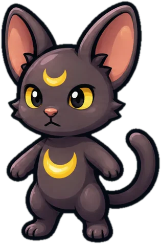

Tap a stage to read its story.
Shadowkit is a sleek, dark-grey kitten with large round ears lined in pink-white, wide violet eyes, and a single golden crescent moon marking on its chest that seems to glow with inner light. Its long tail curls upward at the tip like a question mark. It sits very still and watches - which is more unsettling than anything it actually does. In Ghost Hollow it is found near the quietest pools, staring into the water at something only it can see. When startled, it vanishes and reappears a few steps away without apparent movement.
Field note: Shadowkit's crescent-chest mark brightens exactly at moonrise and fades at dawn - the brightness can be read like a clock if you know the schedule.
Ghost Hollow. Shadowkit and its family are found in the Ghost Hollow. See everyone who lives there.
Share a Bond Food that matches its types to become friends. Shadowkit loves:
A Bond Food is not a trick. It joins your spirit with the Kimuro's spirit, and only when it chooses you.
Print the Kimuro adventure packs: mazes, cards, a board game and Bond Mark medals.
See the printable packs